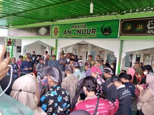
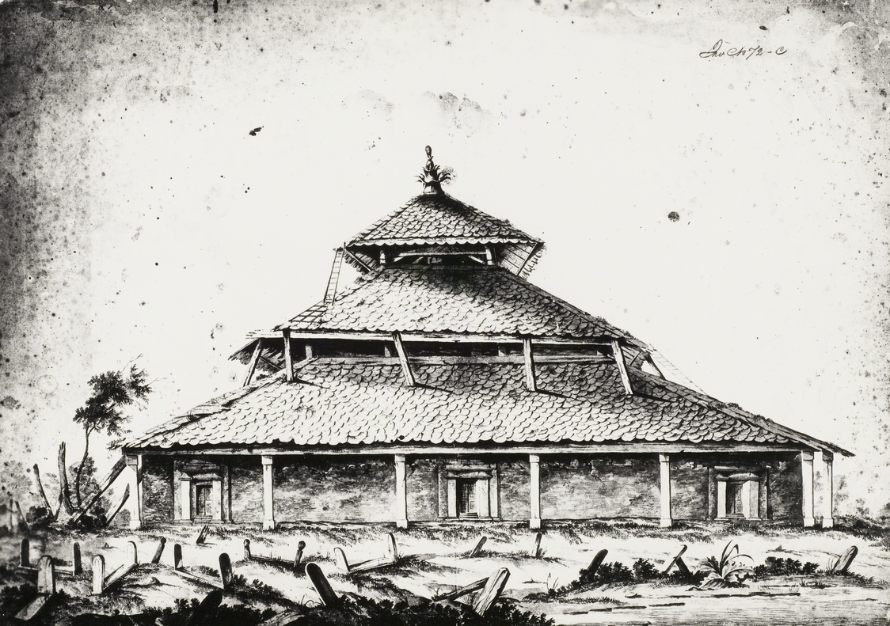
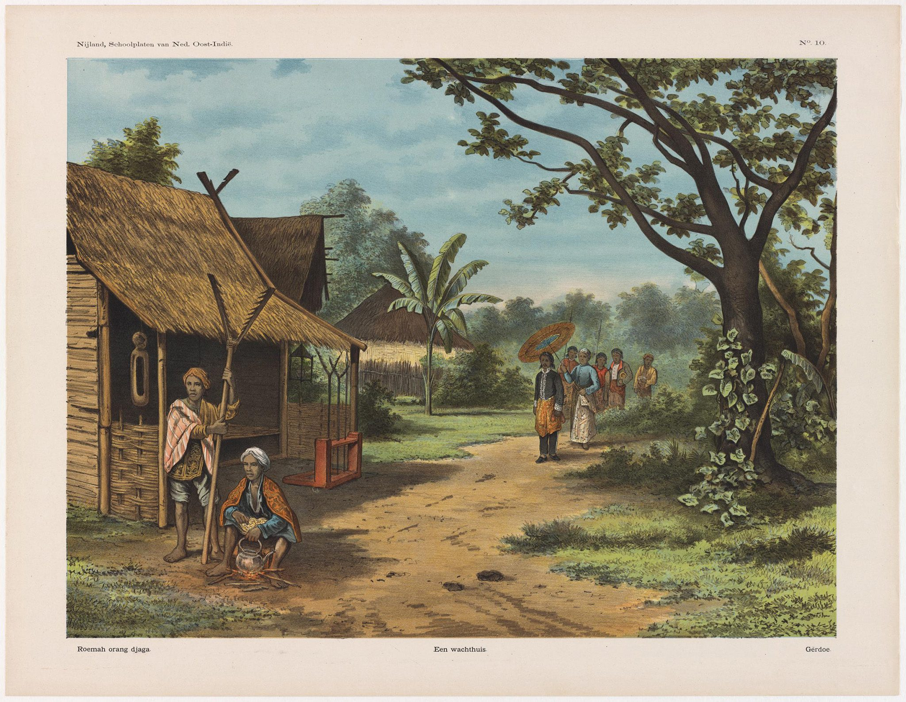
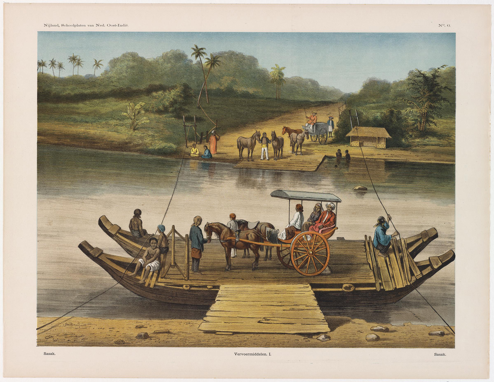
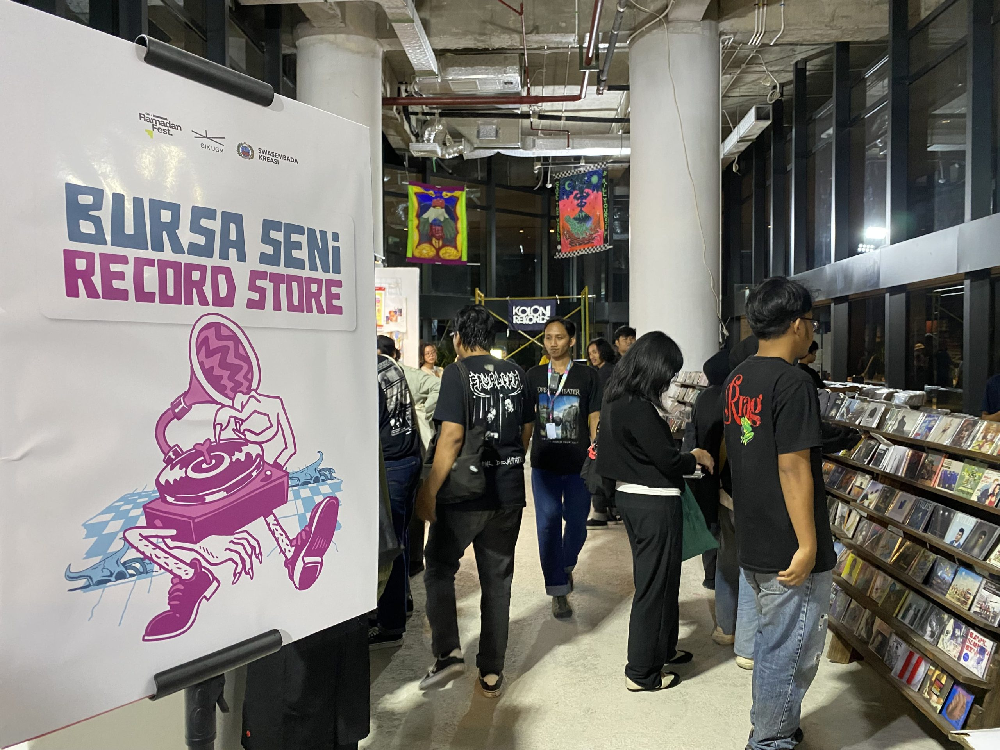

Jogja Performa dalam Fenomena Kesenian di Kota Yogyakarta
Ketika hari libur nasional, jalanan kota Yogyakarta sering dilanda macet. Apalagi hari libur itu seturut dengan akhir pekan. Banyak kendaraan...

Ketika hari libur nasional, jalanan kota Yogyakarta sering dilanda macet. Apalagi hari libur itu seturut dengan akhir pekan. Banyak kendaraan...

Tulisan ini sebelumnya terbit di laman Facebook Mohammad Basyir pada 19 April 2026 dengan judul serupa. Setelah mendapatkan persetujuan langsung...
Para Perasuk karya Wregas Bhanuteja memberi pengalaman yang relatif baru bagi saya dalam menonton film tentang roh dan orang kerasukan. Dua elemen ini biasanya hadir melalui bentuk film horor, terutama untuk konteks Indonesia, yang merupakan...

Kemunculan kembali Para Priyayi karya Umar Kayam dengan sampul baru1 membuat saya menyadari satu hal: bagaimana estetika visual pada sampul...

Ada satu pertanyaan yang sering alpa dalam diskusi sastra Indonesia mutakhir padahal bobot permasalahannya sangat besar. Ketika seorang pengarang bicara...
Ketika hari libur nasional, jalanan kota Yogyakarta sering dilanda macet. Apalagi hari libur itu seturut dengan akhir pekan. Banyak kendaraan...

Sebagai seorang mahasiswa sastra, bagi saya, musik dan sastra adalah dua dunia yang berbeda. Tak mudah untuk menemukan geng-geng nerd...